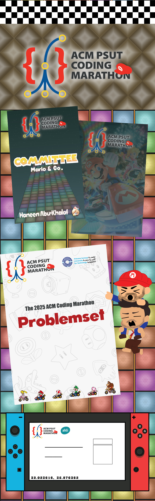

Overview:
For the ACM 2025 competitive programming marathon, I developed a vibrant, highly engaging visual identity inspired by Mario Kart 8. I illustrated and animated all the custom assets for the main announcement video and adapted the official logo to perfectly match the theme.
My work extended across physical and digital touchpoints designing the problem set cover, custom event badges, stickers, the winners' cheque, and even a bespoke pair of glasses for the event. I also expanded the event's media coverage by directing and editing a dedicated video featuring students discussing their internship journeys with Big Tech companies, alongside filming and editing a dynamic recap reel of the marathon attendees. Ultimately, this cohesive and playful campaign drove massive interest, setting new records for both social media engagement and participant turnout in recent years.
View on Instagram ↗︎